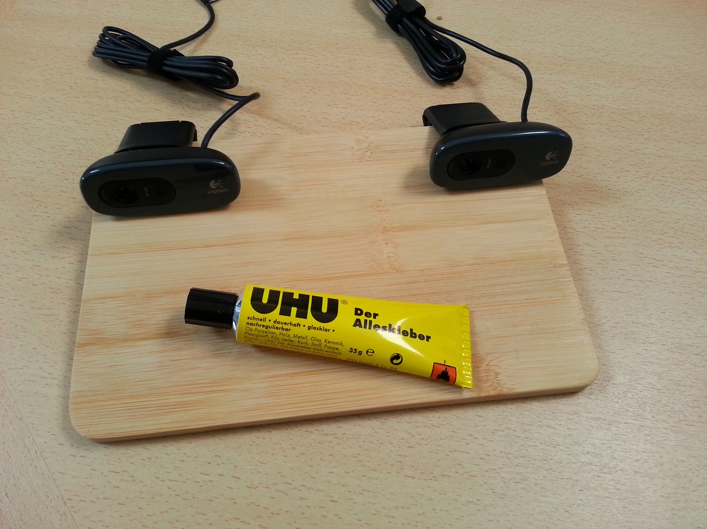
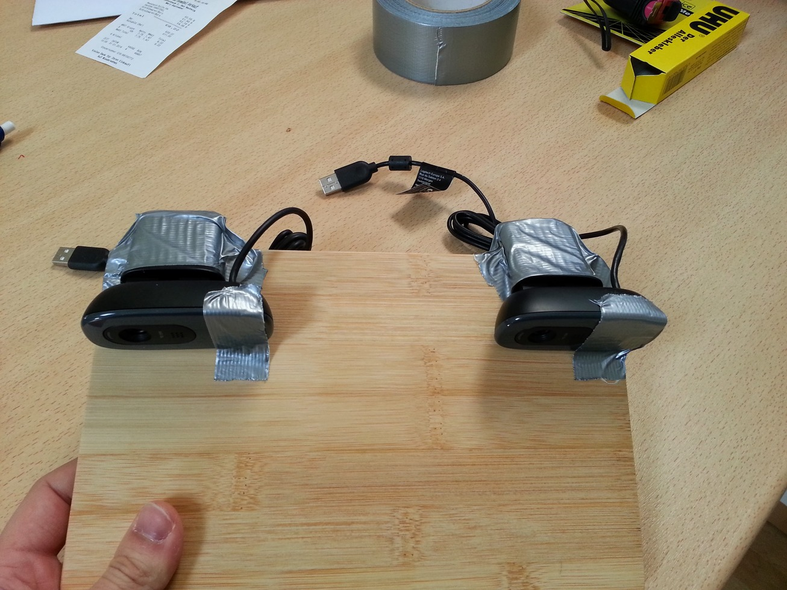
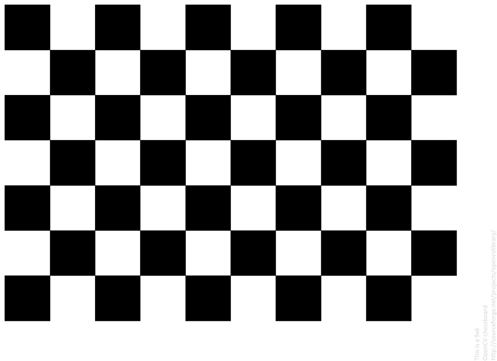
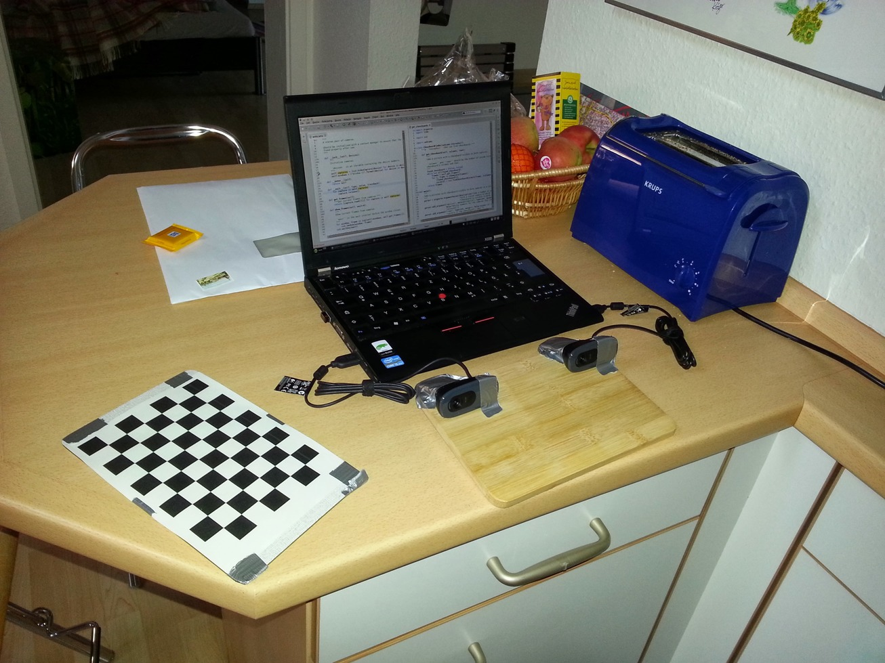
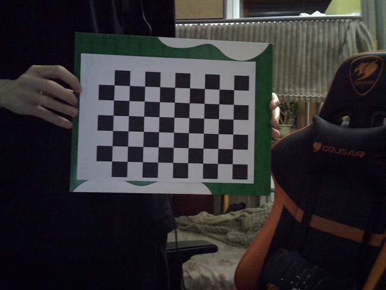

Начало работы
Создание стереокамеры
Что вам понадобится?
Самое главное - удерживать камеры в одинаковом положении при съемке. Мною использовались две одинаковые камеры Logitech C270, но это вовсе необязательно.
Также вам нужна какая-нибудь жесткая, плоская поверхность.
Установка
процесс создания стереокамеры необязательно должен быть таким, как описано ниже.
Для примера, за поверхность возьмем деревянную доску. Нам нужно, чтобы камеры не двигались, поэтому не будет лишним их приклеить.

Для большей уверенности можно замотать их с двух сторон скотчем.

Подготовка шахматной доски
Для калибровки камер по шаблону мною используется шахматная доска. Вы можете распечатать ее на бумажном листе и также приклеить на какую-нибудь жесткую и плоскую поверхность

Подключение к компьютеру
После подключения камер к компьютеру вся установка должна выглядеть как-то так:  все изображения выше взяты с этой статьи.
Чтобы вывести изображения с камер вы можете запустить скрипт 0_show_cameras.py.
В аргументы командной строки необходимо передать индексы камер.
Чаще всего, если к вашему компьютеру не было подключено камер, нужными индексами будут 0 и 1.
Если же вы используете ноутбук со встроенной камерой, то можете попробовать 1 и 2.
Запустим скрипт
python 0_show_cameras.py 1 2
Для каждого скрипта вы можете использовать аргумент --help:
>>> python 0_show_cameras.py --help
usage: 0_show_cameras.py [-h] cams cams
Этот скрипт предназначен для показа видеопотока с камер
positional arguments:
cams Индексы камер
options:
-h, --help show this help message and exit
Сборка изображений для калибровки
Для сборки изображений с шаблоном используется скрипт 1_capture_chessboard.py.
Кадры с камер записываются каждые 5 секунд. перед первым захватом также проходит 5 секунд.
python 1_capture_chessboard.py 1 2 30 dataset 9 6
Разберем каждый параметр:
1 2 - индексы камер
30 - количество снимков
dataset - папка, в которую записываются кадры
9 6 размер нашей доски (9x6 углов)
Перед съемкой рекомендуется настроить освещение. При съемке не стоит резко трясти шаблоном. Используйте разные наклоны и перемещайте доску по видимой области двух камер.

usage: 1_capture_chessboard.py [-h] cams cams amount output rows columns
Этот скрипт предназначен для захвата шахматной доски. Захват шахматной доски необходим для калибровки по шаблону. Рекомендуется
сделать как минимум 30 снимков.
positional arguments:
cams Индексы камер
amount Количество снимков
output Папка, в которую сохраняются кадры
rows Количество внутренних углов в строках шахматной доски.
columns Количество внутренних углов в столбцах шахматной доски.
options:
-h, --help show this help message and exit